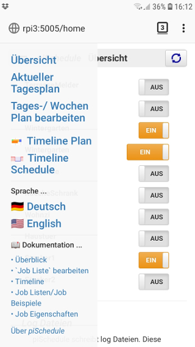

piSchedule Overview

Flexible Lighting Switching with WLAN / Tasmota . schedulePlus3 2020-10-24
piSchedule is an application for the time-controlled switching of devices according to definable daily schedules, which can vary with sunrise / sunset as well as random times. Presence and activity can be simulated with this variably designed house lighting.
piSchedule is an easy-to-use browser application that runs on smartphones, tablets or PCs. Settings, operation, tracking of messages or calling up the documentation are carried out by means of menu control.
piSchedule is aimed at users who, after the initial installation, want to carry out time-controlled switching as well as adapting the daily schedule with the usual elements of a smartphone or PC.
See also piSchedule on Smartphone and PC
piSchedule is a Python program that is installed on a RaspberryPI (RPI) ▸ Description of the setup . After installation, the use of the RPI console is typically no longer required. The console can be used to display log messages, among other things. The console maybe used for log messages.
pilight Switching with Time Schedule -- Overview
piSchedule offers a simple menu driven concept for operation.
Job Definition
With piSchedule the user defines at what time which device has to be switched on/off -- such a definition is called a Job. For the time definitions
of a 'Job' a variety of methods are available, absolute time or relative to a previous defined time (eg. to switch off after a certain time period), or also relative to sunrise/sunset. All time values can be varied randomly also.
Multiple actions for the same device can be handled with one 'Job'.
Day Schedule
A Day Schedule consists of configured 'Jobs'. The Day Schedule definition relates to one day and will be named and stored as a text file (extension .ini required) -- example piSchedule.ini.
This illustration shows the use of the menu control to create jobs. The daily schedule can also be created with a simple text editor (vi, nano etc).
For starting a day schedule the user selects one of those day schedule files from the menu list. That way that plan is activated and piSchedule will calculate the required switching times, taking into account the information related to sunrise, sunset and random times.
With activation of a 'Job' also the resulting time information is checked for consistency. If an already elapsed time is calculated for a job, this is ignored and logged in a piSchedule log file.
(Detailed examples and additional technical aspects of the 'piSchedule jobs' are described in ▸ Time control - examples)
Week Schedule
The week schedule can define different daily schedules for each weekday. If no day schedule for a given weekday is defined (or it's not valid) the day schedule of the previous weekday is used again. This way a definition of just two day schedules for Monday .. Friday and Saturday .. Sunday makes it easy to have a working days and a weekend schedule.
The definition is made on the "Edit Daily / Weekly Plan" page.
For each day of the week, a 'Day Schedule' is selected from the available daily schedules in the menu. The choice of '--' removes a previously selected Day Plan, so that the Dail Plan of the previous weekday is used.
piSchedule -- Settings / Preferences
With starting of piSchedule the following parameters -- the preference are retrieved:
-
Location is the place where piSchedule is installed. This is used to calculate sunrise/sunset on a daily basis.
-
Language (locale) Language code/-version. The language version is retrieved from the installation,
but can changed with the browser (web-GUI).
Currently piSchedule supports DE for German and EN for English.
Other languages are possible with adapting a JSON file. -
Server/Port Automatic retrieve of the networking details
Starting piSchedule
piSchedule will be started on the RaspberryPi console with
sudo service piSchedule start
Important
- This will start piSchedule in the background but closing the console will not terminate piSchedule.
- Even after power failure and restart of the RPI piSchedule restarts automatically. A previously selected schedule is executed again.
The further operation is done via the browser (Web-GUI). The start address for piSchedule
is specified during installation in the form
http://{server}:{port}/
or {RPIname}:{port}/
The RPIname is defined in the router configuration.
At the console you can get this information with
$ ./systemAndPort.py
['raspberrypi:5005', '192.168.1.80:5005'] (example data)This entry in the address line of the browser starts piSchedule.
Exit pischedule
piSchedule is aborted on the RaspberryPI console with
pi@raspberrypi / $ sudo service piSchedule stop,
or cancel in the browser with: http://{server}:{port}/close.
But a restart is only possible via the console!
piSchedule on Smartphone/Tablet or PC
To operate piSchedule the browser is used. The console is only necessary with very limited situation like locking into the log files.
The piSchedule start address
http://{server}:{port} entered in the address field of the browser opens the piSchedule web page with the 'overview' of the known WLAN/Sonoff devices (see also above).
Note
The  info icon opens
documentation on the context.
info icon opens
documentation on the context.
Overview Web Pages
-
Main Menu / Home Page
The header is used for navigation. The opened menu provides access to the piSchedule functions. From there you can also return to the main menu (Overview/home).
Navigation with the Main Menu (Example: Display on a mobile device)
The lower part of the navigation menu offers support functions:
-
Language
Select the language version for the WEB-GUI and the documentation.
-
Documentation
The documentation pages are opened on an extra WEB page or tab.
-
About piSchedule
This menu item opens a page with the installation details, as well as calls to the piSchedule forum and to send a message to the developer.
Actual Day Schedule
(Location, Sunrise/Sunset, Geo-Coordinates)The current "Day Schedule" shows the calculated upcoming switching operations as defined in the current daily schedule.
The page has two sections:
-
Menu with buttons
▸ The blue button serves as a menu for selecting and loading a saved daily schedule. After loading, the button shows the name of the selected schedule. For a selected daily plan, all times are recalculated; only the resulting switching times that lie after the current time are listed.
▸ Icon Update The daily schedule is displayed with the jobs still pending. The times are not recalculated!
▸ Icon Timeline The current daily schedule is displayed as a bar chart, a change of the individual jobs/switching processes is possible interactively on the screen. Details and operation see here: ▸ timeline
▸ Daily Logs Shows a page with the executed jobs (see below) of the daily schedule.
▸ The button is used to define additional jobs. However, these are only valid for the current day. If the daily schedule is reloaded, these added jobs are removed. To permanently add jobs to a daily schedule see ▸ Daily Schedule/Edit Jobs.
▸ The info icon opens a help page for these functions. -
Current switching operations of the day
This table shows all jobs still pending for the day. The table rows result from the resolution of the current daily schedule (see blue menu field above).
Next to the switching times, the ON or OFF instruction can be seen. With OFF statements, a bracket expression indicates the corresponding ON statement.
With the button in the table rows the switching process can be deleted. Again, this is only valid as long as the daily schedule is not reloaded.
Job Lists Edit
With the main menu the creation or editing of daily plans / job lists is called up.
The blue menu button [Daily Plans] offers all existing daily plans (INI/text files) for processing the jobs. The opened plan allows to interactively create, edit and save daily plans (as INI/text file).
This function is described in detail under ▸ Edit Daily Schedule/JobsExamples for INI/Text and Prefs files
Day Logs
Calling this page automatically loads a list of the [Today] already executed switching actions.
[Select day] -- Shows a menu with the weekdays to alternatively call up the list of another weekday.
piSchedule rewrites these log files every day in a weekly rhythm.
piSchedule Setup
piSchedule is a Python program, it runs on the RaspberryPi.
The installation and an update of all piSchedule components is described in detail on the page ▸ piSchedule Setup
Start/Stop with 'service' on the RPI console
The 'service' command controls the execution of the piSchedule program on the RPI, see also:
pi@raspberrypi ~ $ sudo service piSchedule Usage: /etc/init.d/piSchedule {start|stop|restart|status}The program System is executed in the background.
----------------------piSchedule Preferences
piSchedule stores important parameter in a file "piSchedule.prefs.json" and at piSchedule start it reads the previous used parameters from that file. If the file is missing, piSchedule will retrieve those preferences and stores them for further use.
The preference file
piSchedule.prefs.jsoncan be resetted at the console prompt with
sudo echo "{}" > ~/schedulePlus3/piSchedule.prefs.jsonThe actual setting of the preferences can be shown with
http://{server}:{port}/prefsor{RPIname}:{port}/prefsThen it is piSchedule to restart, see above.
Show the current preferences on the WEB page with:
http://{server}:{port}/prefsor{RPIname}:{port}/prefsLocation data - sunrise / sunset
piSchedule calculates the daily times for sunrise and sunset from the installation location of the RPI using the Internet access (IP code) or geo-coordinates (latitude / longitude).
The geo coordinates are made available using the following methods:
▸ Internet service http://ipinfo.io/If the GeoCoordinates should have been determined only inaccurately, Longitude/Latitude can also be specified manually. For this purpose the parameters are to be specified with "geoCoordinates". (See also below)
Extract from the preference file for the determination of sunrise and sunset
------------------"latitude": "52.758", "longitude": "5,192", "sunset": "2020-09-15 17:18:18", "sunrise": "2020-09-15 07:13:43",Language setting
piSchedule supports the languages German (DE) and English (EN) for the browser web GUI.
Other languages for the web GUI can be supported by extending the file ~/schedulePlus3/piStrings.json.
Such an additional language/file extension will be activated directly with a restart of piScheduleNote
The documentation for other languages is stored in the download structure of the application. (Please request support from the author)Set Preferences
Certain piSchedule preference values can be changed directly via the WEB interface using
http://{server}:{port}/{prefs}?{wert}:- Language Setting -
/locale?DE|EN - GeoCoordinates -
/geoCoordinates?{longitude}, {latitude} - Basic setting for Schedule INI.File -
/iniFile?{fileName}
Note The sign | stands for alternative information, eg DE or EN
Umlaute are not permitted (only ASCII characters); e.g. replaceümitueetc.piSchedule Logging
The weekday log files (Monday.log ... Sunday.log) show the executed jobs with
https://{server}:{port}/logs
piSchedule writes two log-files in the directory~/schedulePlus3/logs/.Listing on the Console with:
cat ~/schedulePlus3/logs/piInfo.log-- messages for the calculations of the Day Schedule/Jobs an of the browser callscat ~/schedulePlus3/logs/piSystem.log-- System relevant messages, also error messages
See also log-files with '.log.1' und '.log.2'
Contributions and Acknowledgement
Thanks to framp! He helped with feedback, testing and his Linux experience to improve the program and functionality.
-
Language
 Spende was piSchedule Dir wert ist.
Spende was piSchedule Dir wert ist.{kind=link}